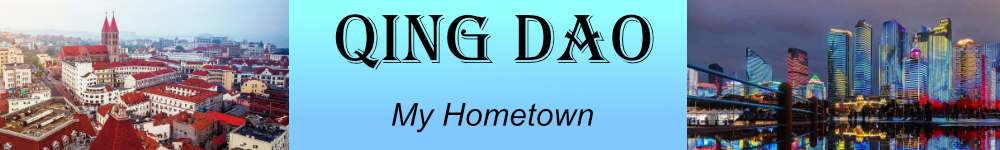
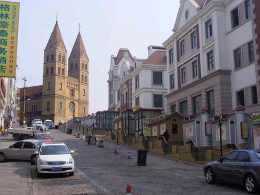
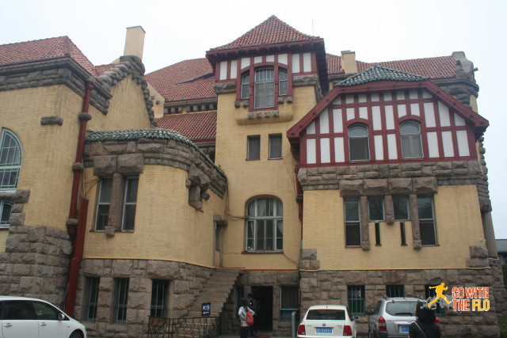
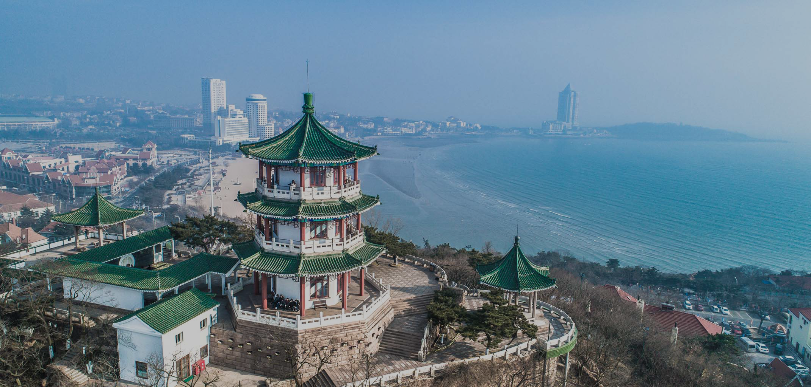

Architecture
Landmark Buildings
Qingdao's architecture was influenced by both China and Germany. There are many beautiful architectures in the city.
St. Michael's Cathedral
Governor's Palace
Xiaoyu Hill
St. Michael's Cathedral

St. Michael's Cathedral is a Catholic church in Qingdao. It is built by German missionaries, the cathedral stands at the top of a hill in the center of the old German-built part of the city.
Back to top
Governor's Palace

This was the house of former governor from Germany. It is now a museum and guest room.
Back to top
Xiaoyu Hill

This temple is built on Xiaoyu Hill in the middle of the old city district. It is a good representation of Chinese style architecture in the city.
Back to top